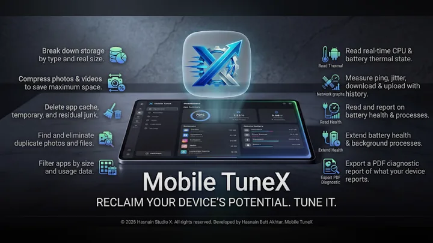
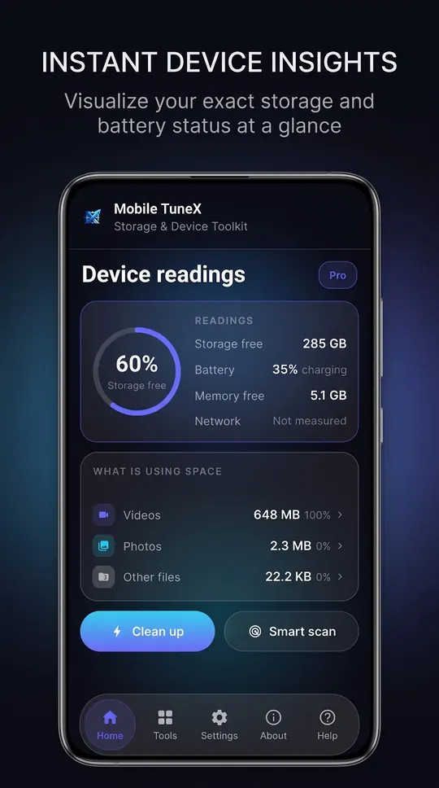
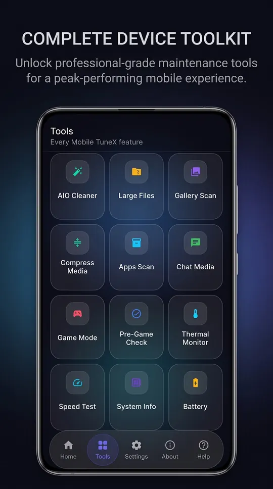
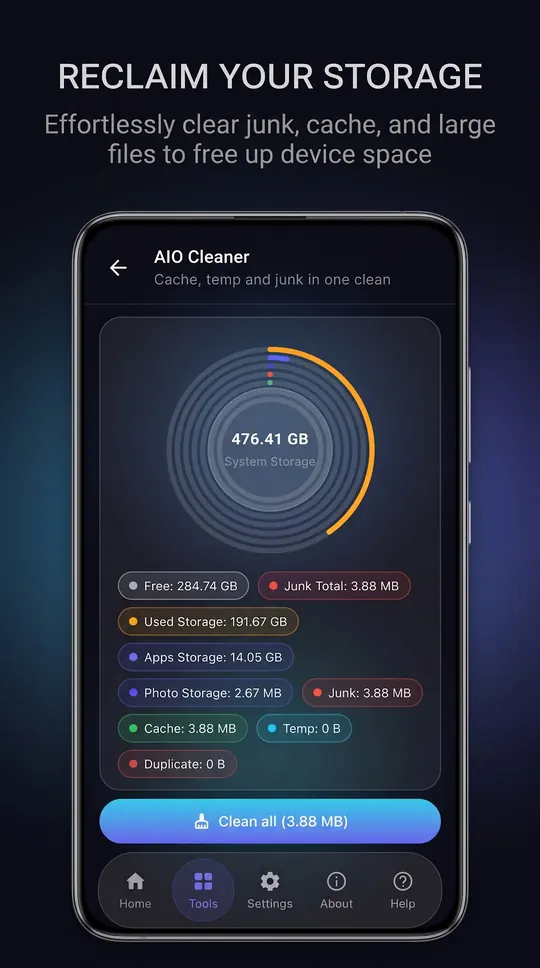
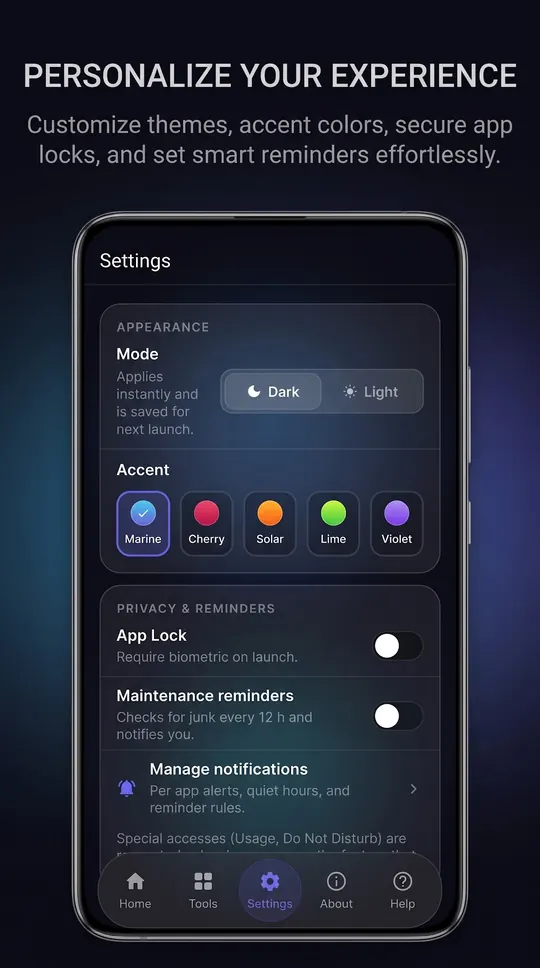
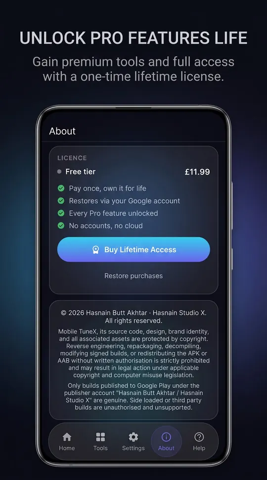
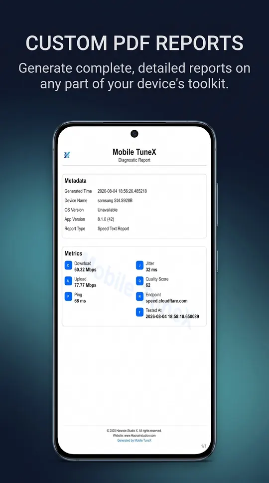

Mobile TuneX
See what fills your phone, and clear it on your terms
Mobile TuneX breaks your storage down by real size, clears the cache and junk you tick, finds duplicate and blurry photos, and makes smaller copies of the photos and videos you choose. It also reads battery, temperature, network speed and system details. No account, no cloud.
Free on Google Play, with an optional one-time Pro unlock. There is no subscription and no account to keep it working. Genuine copies are published only on Google Play.
What Mobile TuneX does
- Storage broken down into videos, photos, audio and other files by real size
- Cache, temporary files and leftover junk, cleared only when you tick them
- Duplicate and blurry photos, with a preview before every deletion
- Smaller copies of the photos and videos you choose, with the space saved
- Battery, temperature, network speed test and system details
- Game Mode: Do Not Disturb for a session you set
Your first hour with Mobile TuneX
A short plan for finding out quickly whether it suits you.
Install it free
Get Mobile TuneX from Google Play. The free version is enough to see whether it suits you.
Use your own work
Try it on your own phone and real tasks rather than a quick look around. That is the only test that tells you whether it earns its place.
Try this
Storage broken down into videos, photos, audio and other files by real size
Try this
Cache, temporary files and leftover junk, cleared only when you tick them
Try this
Duplicate and blurry photos, with a preview before every deletion
Decide on Pro
If the free version earns its place, the optional Pro unlock is a single purchase on Google Play, with no subscription.
Mobile TuneX on screen






Mobile TuneX running on Android, captured from the application itself.
Inside Mobile TuneX
See where your space went
Your storage is broken down into videos, photos, audio and everything else, with the real size of each. Tap a category and you are straight into the tool that deals with it. Every number is read from your own phone.
Clear what you choose
The cleaner rounds up app cache, temporary files and leftover junk, sorted by category, and nothing goes until you tick it. Gallery Scan finds duplicate and blurry photos and shows each one before it is deleted. Large Files lists your biggest photos and videos with thumbnails, Chat Media finds the WhatsApp photos, videos and voice notes piling up in the background, and Apps Scan lists your apps by size and by when you last opened them.
Keep the photo, lose the size
Compress Media makes smaller copies of the photos and videos you pick and shows the exact space saved. Your originals stay until you decide to remove them.
Know your phone
Battery shows charge level, temperature, charge rate and power source. Thermal Monitor shows live battery and CPU temperature and the heat status Android reports. Speed Test measures ping, jitter, download and upload, with a live graph and a saved history. System Info gathers hardware, memory, storage, display and Android details in one view.
Games, and the rest
Game Mode turns on Do Not Disturb for a session you set and can open your game for you. Pre-Game Check clears the files you select and shows memory and temperature before you play. There is also a home screen widget, a biometric App Lock, maintenance reminders, per-app notification controls and PDF reports you can save or share.
Who it is for
Mobile TuneX is built for anyone whose phone keeps running out of space, and anyone who wants to see what is on their phone before deleting any of it.
It sits in the storage and device tools part of the catalogue, and your photos and files never leave the phone to be processed. There is no server behind Mobile TuneX to send them to.
Local-first, by design
Plenty of the alternatives send your photos and files to a server to be handled. Mobile TuneX does not. Processing runs on your phone’s own processor, and the photos, videos and files on your phone stay where you put them. Scanning, cleaning and compressing work offline. The speed test needs a connection, and so do the ads in the free version and the Pro purchase check.
That is not a setting you enable, it is how Mobile TuneX is built, which is why there is no account to create and no subscription to lapse. Full detail is in the Mobile TuneX privacy policy.
Mobile TuneX measures, compresses and deletes what you choose. It does not pretend to speed up your phone, cool its processor or extend battery life, because Android does not let any app do that.
Free and Pro
Mobile TuneX is free on Google Play. The storage breakdown, the cleaner, Gallery Scan, Large Files, Chat Media, Apps Scan, Battery, Speed Test and System Info, with ads.
A one-time Pro unlock, with no subscription, adds:
- No ads
- Deep Clean
- Apps Deep Scan and Gallery Deep Scan
- Compress Media
- Thermal Monitor
- Game Mode and Pre-Game Check
- Automatic maintenance
- Bulk delete
- PDF reports
On the free version you can open any Pro tool for 10 minutes by watching an ad. Pro restores on every device signed in to the same Google account.
The free version shows ads served by Google AdMob. Google may use your device’s Advertising ID under its own policies. Hasnain Studio X does not receive or store it. Buying Pro removes all ads.
What it asks your phone for
Android shows these when you install or first use a feature. Each one is used for the reason given, and for nothing else.
- Photos, videos and storage
- to scan, clean and compress the files you choose
- Usage access
- to show when you last opened each app
- Uninstall requests
- Android asks you to confirm every app removal
- Notifications
- for the maintenance reminders you set
- Biometrics
- for App Lock, if you turn it on
- Network
- for the speed test, the ads and the Pro purchase check
- Advertising ID
- for the AdMob ads in the free version
Technical details
- Platform
- Android 7.0 or later
- Distribution
- Google Play
- Availability
- Available now
- Licence
- Free, optional one-time Pro
- Network required
- Offline, except the speed test
- Account required
- None
- Telemetry
- None. Free version shows ads
- Publisher
- Hasnain Studio X
- Developer
- Hasnain Butt Akhtar
Questions
Does Mobile TuneX need an internet connection?
Scanning, cleaning and compressing work offline. The speed test needs a connection, and so do the ads in the free version and the Pro purchase check.
Does Mobile TuneX require an account?
No. There is no registration, no sign-in and no online identity. You install the app and use it.
What data does Mobile TuneX collect?
Hasnain Studio X collects nothing: there is no account, no analytics and no crash reporting that leaves your phone, and your photos and files are never uploaded. The free version shows ads served by Google AdMob. Google may use your device’s Advertising ID under its own policies. Hasnain Studio X does not receive or store it. Buying Pro removes all ads. The full detail is in the Mobile TuneX privacy policy.
Is Mobile TuneX a subscription?
No. Mobile TuneX is free on Google Play, with an optional one-time Pro unlock. There is no recurring fee.
Which versions of Android does it support?
Android 7.0 or later.
Get Mobile TuneX
Available now on Google Play. It is free, and a single optional purchase unlocks Pro for good, with no subscription and no account.
Mobile TuneX privacy policy · Support and bug reports · PC & system apps · Full catalogue
Mobile TuneX™ is a trademark of Hasnain Studio X. Hasnain Studio X™ is a trade mark of Hasnain Studio X.